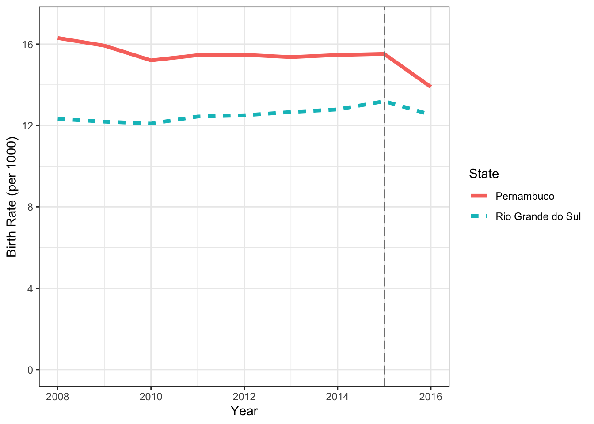
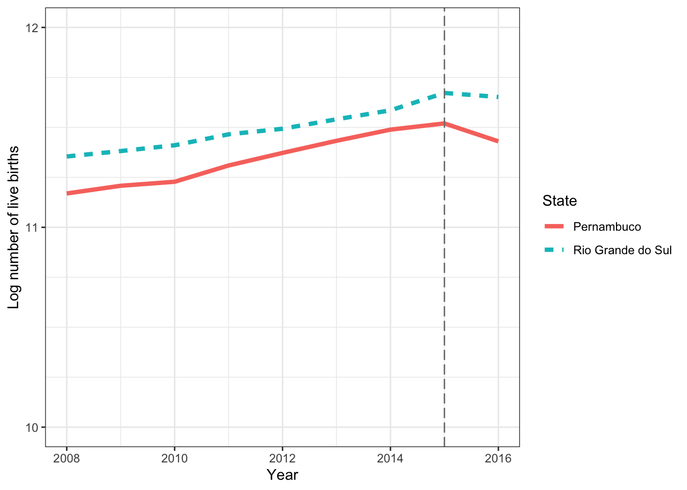
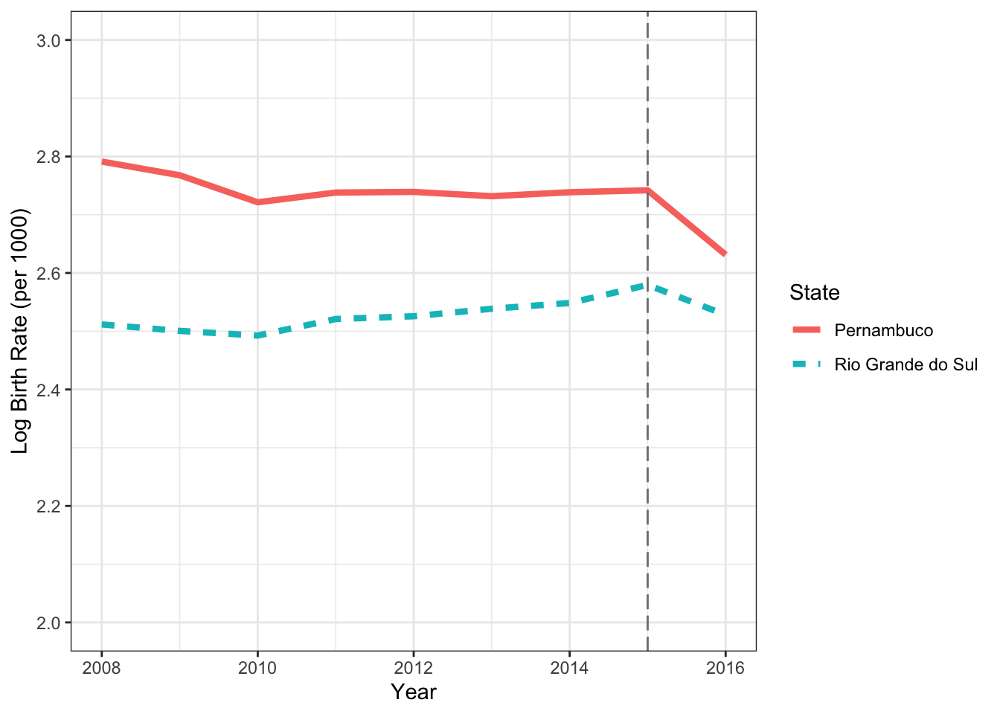
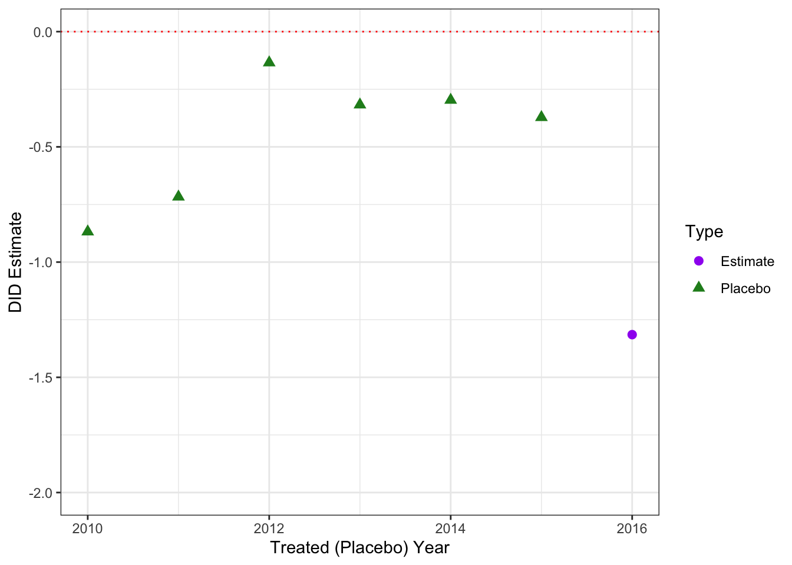
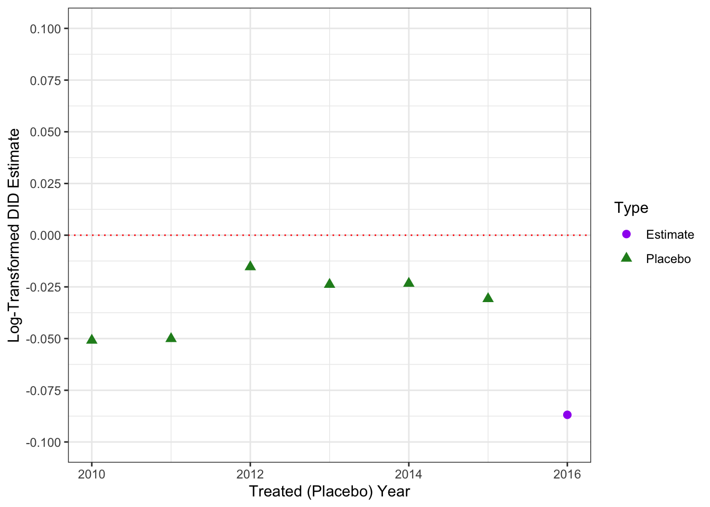

load(file="../data/zika.Rda")DID Analysis: Zika and Birth Rates
Setting and Data
The data and analysis for this section come from Taddeo et al. (2022). We are interested in understanding the impact of the 2015–2016 Zika virus epidemic on birth rates in Brazil. The epidemic was quite localized within Brazil, with over 65\% of cases arising in the northeastern state of Pernambuco, while the southern state of Rio Grande do Sul had no reported cases. The authors collected administrative data on live births from 185 municipalities in Pernambuco and 497 in Rio Grande do Sul from 2008 to 2016.
The goal of the analysis is to test the hypothesis that the Zika epidemic led to a reduced birth rate in the highly-affected state of Pernambuco and estimate the effect of this shock. Rio Grande do Sul will be used as the control (untreated) unit.
The data are available in the zika.Rda file. zika_full contains the full data set, by muncipality, while zika_summ summarizes this to the two states. The full data set is available, posted by the original authors.
First, load the data into R.
Libraries
Throughout the workshop, we will use the tidyverse environment for data cleaning and plotting, but the operations for the methods we are learning can be conducted in base R as well. The knitr package is used for formatting table output into the document.
To get clustered standard errors for the regression-based DID analyses, we use linear mixed effects models fit using the lme4 package, although other options are available.
We now load the required libraries.
## If you have not installed these packages before,
## run the following line:
# install.packages(c("tidyverse","knitr","lme4"))
## Either way, the packages must be loaded:
library(tidyverse)
library(knitr)
library(lme4)Graphical Exploration
As always, we begin with exploratory data analysis, plotting the time series for visual inspection. Here, we plot the results akin to Figures 2(a) and 2(b) in Taddeo et al. (2022).
## Plot birth rate over time by state:
#| fig-cap: "Plot of live birth rate (per 1,000 population) by year and state, Brazil, 2008–2016"
#| fig-alt: "A line plot with the line for Pernambuco slowly declining from around 16 in 2008 to around 15.5 in 2015 and then to 14 in 2016 while the line for Rio Grande do Sul slowly increases from around 12 in 2008 to around 13 in 2015 and then falls to 12.5 in 2016."
ggplot(data=zika_summ) +
geom_line(mapping=aes(x=Year, y=Rate, color=State, linetype=State),
linewidth=1.5) +
theme_bw() +
scale_y_continuous(name="Birth Rate (per 1000)",
limits=c(0,17),
breaks=seq(0,16,by=4),
minor_breaks=seq(0,16,by=2)) +
geom_vline(xintercept=2015, linetype="longdash", color="grey50")
## Plot log of number of births over time by state:
#| fig-cap: "Plot of natural log of the number of live births by year and state, Brazil, 2008–2016"
#| fig-alt: "A line plot with the line for Pernambuco steadily increasing from around 11.2 in 2008 to around 11.5 in 2015 and then falling to around 11.4 in 2016 while the line for Rio Grande do Sul steadily increases from around 11.3 in 2008 to around 11.7 in 2015 and then holds steady in 2016."
ggplot(data=zika_summ) +
geom_line(mapping=aes(x=Year, y=LogBirths, color=State, linetype=State),
linewidth=1.5) +
theme_bw() +
scale_y_continuous(name="Log number of live births",
limits=c(10,12),
breaks=seq(10,12,by=1),
minor_breaks=seq(10,12,by=.25)) +
geom_vline(xintercept=2015, linetype="longdash", color="grey50")
We can also plot the natural log of the birth rate.
## Plot log of birth rate over time by state:
#| fig-cap: "Plot of natural log of the rate of live births (per 1,000 population) by year and state, Brazil, 2008–2016"
#| fig-alt: "A line plot with the line for Pernambuco declining from 2.8 in 2008 to just above 2.7 in 2010, holding steady until 2015, and then declining to around 2.64 in 2016, while the line for Rio Grande do Sul holds steady around 2.5 from 2008 to 2010, then increases steadily to nearly 2.6 in 2015 and declines to around 2.54 in 2016."
ggplot(data=zika_summ) +
geom_line(mapping=aes(x=Year, y=LogRate, color=State, linetype=State),
linewidth=1.5) +
theme_bw() +
scale_y_continuous(name="Log Birth Rate (per 1000)",
limits=c(2,3),
breaks=seq(2,3,by=.2),
minor_breaks=seq(2,3,by=.1)) +
geom_vline(xintercept=2015, linetype="longdash", color="grey50")
Discussion Question
From these plots, does it appear that parallel trends hold for any of these outcomes? Which seems the most reasonable?
Two-by-Two DID Summary
We can start by examining just two time periods: 2014, prior to the outbreak, and 2016, the first year where the outbreak could have affected live birth rates throughout the year. Note that we exclude 2015, which may have been partially affected. We continue to use the zika_summ data set here, looking at the two states as a whole.
## Get differences within-units:
did_2x2 <- zika_summ %>%
dplyr::filter(Year %in% c(2014,2016)) %>%
pivot_wider(id_cols=State,
names_from=Year,
values_from=Rate) %>%
mutate(`Diff, 2016–2014`=`2016`-`2014`)
## Get differences within years:
yr_diffs <- did_2x2 %>%
dplyr::filter(State=="Pernambuco") %>%
dplyr::select(-c(State)) -
did_2x2 %>%
dplyr::filter(State=="Rio Grande do Sul") %>%
dplyr::select(-c(State))
## Combine into presentation table:
did_2x2_f <- did_2x2 %>%
add_row(bind_cols(State="Diff, Treated–Untreated",
yr_diffs))
## Print formatted table of two-by-two analysis:
knitr::kable(did_2x2_f,
digits=1,
caption="Table 1. Two-by-two DID analysis of birth rates in Pernambuco and Rio Grande do Sul, 2016 vs. 2014")| State | 2014 | 2016 | Diff, 2016–2014 |
|---|---|---|---|
| Pernambuco | 15.5 | 13.9 | -1.6 |
| Rio Grande do Sul | 12.8 | 12.5 | -0.3 |
| Diff, Treated–Untreated | 2.7 | 1.4 | -1.3 |
Linear TWFE Model
The two-by-two DID that summarizes to the exposed/unexposed level is the most straightforward, but ignores a lot of the information we have on variability of the outcome. We can incorporate all of the information on the municipalities using the TWFE regression analysis. We start with the linear form. Note that we are now using the zika_full data set, which has columns for our outcome (Rate), unit identifier (State, as a factor variable), time identifier (year, coded as 0 for 2014 and 1 for 2016), and whether the exposure was in effect for that observation (interaction, coded as 0 for unexposed and 1 for exposed).
## Fit linear TWFE model and extract estimate and 95% CI:
zika_lm <- lm(Rate~State+year+interaction,
data=zika_full)
coef(zika_lm)[c("(Intercept)","year","interaction")](Intercept) year interaction
15.1236895 -0.1013549 -1.2069394 confint(zika_lm, parm="interaction", level=0.95) 2.5 % 97.5 %
interaction -1.87173 -0.5421485This gives an effect estimate of -1.21 births per 1,000 population, suggesting a negative effect of the outbreak on birth rates in Pernambuco. The standard errors and confidence intervals should be treated with suspicion, however, as they ignore the correlation between observations in the same municipality in different years.
To correct the standard errors, we can cluster by the municipality using a linear mixed effects model with a random effect for municipality.
## Fit a linear mixed effects model to account for clustering by municipality:
zika_lmer <- lmer(Rate~State+year+interaction+
(1|Code),
data=zika_full)
fixef(zika_lmer)[c("(Intercept)","year","interaction")](Intercept) year interaction
15.1236895 -0.1013549 -1.2069394 confint(zika_lmer, parm="interaction", level=0.95)Computing profile confidence intervals ... 2.5 % 97.5 %
interaction -1.558305 -0.8555737This gives the same effect estimate of -1.21 births per 1,000 population, with a 95% confidence interval of [-1.558, -0.856], indicating a statistically significant negative effect.
Another approach to clustered inference is the block-bootstrap method.
## First, get a list of unique codes by state
codes <- zika_full %>% dplyr::select(Code,State) %>% distinct()
## Then, write a function that samples codes within each state:
boot_data <- function() slice_sample(codes, by=State, prop=1, replace=TRUE) %>%
expand_grid(StudyYear=rep(c(2014,2016))) %>%
left_join(zika_full, by = join_by(Code, State, StudyYear))
## Set seed for reproducibility:
set.seed(3671)
## Run the sampling and analysis 1000 times to get a distribution:
lm_boot <- replicate(n=1000,
expr=lm(Rate~State+year+interaction,
data=boot_data())$coefficients["interaction"])
## Examine the median (estimate) and 2.5 and 97.5 percentiles:
quantile(lm_boot, probs=c(0.5,0.025,0.975)) 50% 2.5% 97.5%
-1.2033250 -1.5202092 -0.8842974 This method gives an effect estimate of -1.20 births per 1,000 population, with a 95% confidence interval of [-1.520, -0.884], very similar to the previous results.
Discussion Questions
How should this result be interpreted?
What do the three key assumptions mean for this setting?
Which of these assumptions are reasonable? Which are unlikely to be valid?
Placebo Test in Time
We can use the zika_summ data set to run the two-by-two DID analysis on all pairs of years that are two years apart, starting with 2010 vs. 2008. Since there were no Zika outbreaks in those prior years, if the parallel trends assumption holds true, the estimates should be distributed around 0.
## Create a data set with a row for each pair of years
zika_plac <- tibble(`Treated Year`=unique(zika_summ$Year),
`Untreated Year`=`Treated Year`-2) %>%
dplyr::filter(`Untreated Year` %in% unique(zika_summ$Year)) %>%
left_join(zika_summ %>% dplyr::select(Year,State,Rate) %>%
pivot_wider(id_cols=Year, names_from=State, values_from=Rate),
by=join_by(`Treated Year`==Year)) %>%
rename(P1=Pernambuco, R1=`Rio Grande do Sul`) %>%
left_join(zika_summ %>% dplyr::select(Year,State,Rate) %>%
pivot_wider(id_cols=Year, names_from=State, values_from=Rate),
by=join_by(`Untreated Year`==Year)) %>%
rename(P0=Pernambuco, R0=`Rio Grande do Sul`)
## Get the estimate for each pair of years
zika_plac <- zika_plac %>%
mutate(Estimate=(P1-P0)-(R1-R0),
Type=factor(if_else(`Treated Year`==2016,
"Estimate","Placebo")))## Plot two-by-two DID estimates for placebo years:
#| fig-cap: "Plot of two-by-two DID estimates for placebo treatment years (2010–2015) and actual treated year (2016)"
#| fig-alt: "A scatter plot with points ranging from around -0.868 to -0.135 in the 2010 through 2015 years, with a point around -1.3 in 2016."
ggplot(data=zika_plac) +
geom_point(mapping=aes(x=`Treated Year`, y=Estimate,
color=Type, shape=Type),
size=2.5) +
theme_bw() +
labs(x="Treated (Placebo) Year", y="DID Estimate") +
scale_y_continuous(limits=c(-2,0), breaks=seq(-2,0,by=.5)) +
scale_color_manual(breaks=c("Estimate","Placebo"),
values=c("purple","forestgreen")) +
geom_hline(yintercept=0, color="red", linetype="dotted")
Re-Scaling: Natural Log
One approach that might improve the parallel trends assumption in this case is to use a log transformation. We implement this using the linear mixed effects model to get a cluster-robust confidence interval.
## Fit TWFE model with clustering by municipality and log-scale:
zika_log_lmer <- lmer(LogRate~State+year+interaction+(1|Code), data=zika_full)
summary(zika_log_lmer)Linear mixed model fit by REML ['lmerMod']
Formula: LogRate ~ State + year + interaction + (1 | Code)
Data: zika_full
REML criterion at convergence: -77.6
Scaled residuals:
Min 1Q Median 3Q Max
-4.7117 -0.3414 0.0739 0.4163 3.0462
Random effects:
Groups Name Variance Std.Dev.
Code (Intercept) 0.04955 0.2226
Residual 0.02402 0.1550
Number of obs: 1364, groups: Code, 682
Fixed effects:
Estimate Std. Error t value
(Intercept) 2.699193 0.019942 135.355
StateRio Grande do Sul -0.386474 0.023360 -16.544
year -0.017260 0.009832 -1.756
interaction -0.070706 0.018877 -3.746
Correlation of Fixed Effects:
(Intr) StRGdS year
SttRGrnddSl -0.854
year 0.000 -0.210
interaction -0.345 0.404 -0.521confint(zika_log_lmer, level=0.95)Computing profile confidence intervals ... 2.5 % 97.5 %
.sig01 0.20779243 0.237716263
.sigma 0.14689761 0.163351936
(Intercept) 2.66012593 2.738260691
StateRio Grande do Sul -0.43223814 -0.340709224
year -0.03652934 0.002008589
interaction -0.10770239 -0.033708693## Exponentiate estimates and CI to get RR estimates:
exp(summary(zika_log_lmer)$coefficients["interaction","Estimate"])[1] 0.9317362exp(confint(zika_log_lmer, level=0.95))Computing profile confidence intervals ... 2.5 % 97.5 %
.sig01 1.2309576 1.2683493
.sigma 1.1582354 1.1774510
(Intercept) 14.2980895 15.4600719
StateRio Grande do Sul 0.6490548 0.7112657
year 0.9641298 1.0020106
interaction 0.8978948 0.9668531This approach gives an effect estimate of -0.0707 births per 1,000 population, with a 95% confidence interval of [-0.108, -0.0337], indicating a statistically significant negative effect. On the multiplicative scale, by exponentiating, we get an estimate of 0.932 with a 95% CI of [0.898, 0.967].
We can check the placebo in-time plot for the log-transformed outcome.
## Add log-transformed DID estimate to placebo data set:
zika_plac <- zika_plac %>% mutate(LogEstimate=log(P1/P0)-log(R1/R0))## Plot two-by-two log-transformed DID estimates for placebo years:
#| fig-cap: "Plot of two-by-two log-transformed DID estimates for placebo treatment years (2010–2015) and actual treated year (2016)"
#| fig-alt: "A scatter plot with points ranging from around 0 to -0.05 in the 2010 through 2015 years, with a point around -0.09 in 2016."
ggplot(data=zika_plac) +
geom_point(mapping=aes(x=`Treated Year`, y=LogEstimate,
color=Type, shape=Type),
size=2.5) +
theme_bw() +
labs(x="Treated (Placebo) Year", y="Log-Transformed DID Estimate") +
scale_y_continuous(limits=c(-0.1,0.1), breaks=seq(-0.1,0.1,by=.025)) +
scale_color_manual(breaks=c("Estimate","Placebo"),
values=c("purple","forestgreen")) +
geom_hline(yintercept=0, color="red", linetype="dotted")
Discussion Questions
Do the placebo tests support the observed effect being a true causal effect?
Do they indicate potential bias in one direction or another?
Additional Options
Further modeling is possible. In this case, the authors also proposed Poisson and Negative Binomial models for the live birth counts in the DID framework. Further details on model fitting and interpretation can be found in the article.
The following code can be run to fit the Poisson GLM with bootstrap CI or GLMM, clustered by municipality:
# To execute this code into the document, change the previous line to true
## Fit Poisson GLM:
zika_glm <- glm(Births~State+year+interaction+offset(log(Pop)), data=zika_full,
family=poisson(link="log"))
summary(zika_glm)
## Compute bootstrap 95% CI for Poisson GLM:
set.seed(4008335)
glm_boot <- replicate(n=1000,
expr=glm(Births~State+year+interaction+offset(log(Pop)),
data=boot_data(),
family=poisson(link="log"))$
coefficients["interaction"])
glm_boot_res <- quantile(glm_boot, probs=c(0.5,0.025,0.975))
## Exponentiate results:
exp(c(Estimate=unname(coef(zika_glm)["interaction"]),
CI.Lower=glm_boot_res["2.5%"],
CI.Upper=glm_boot_res["97.5%"]))
## Fit Poisson GLMM, clustered by municipality:
zika_glmer <- glmer(Births~State+year+interaction+offset(log(Pop))+(1|Code),
data=zika_full,
family=poisson(link="log"))
zika_glmer_CI <- confint(zika_glmer, parm="interaction", level=0.95)
## Exponentiate results:
exp(c(Estimate=unname(summary(zika_glmer)$coefficients["interaction","Estimate"]),
CI.Lower=zika_glmer_CI["interaction","2.5 %"],
CI.Upper=zika_glmer_CI["interaction","97.5 %"]))Discussion Question
How do transformations of the outcome change the interpretation of the estimate and of the assumptions required?